True or false: an abstract class can contain concrete methods, and it can be instantiated with new.
Show answer
Half true. It can contain concrete methods, but it can never be instantiated directly. Only a concrete subclass can be created.
Architecture names the components; component design decides what goes inside them. This lecture shows how a component becomes classes and interfaces, refreshes the four object-oriented ideas you need for that (classes, abstract classes and interfaces, inheritance, polymorphism), and then covers the first three SOLID principles. Each principle is a test you can run on a class diagram.
Defines the internal structure (classes, data) and behavior (algorithms, interactions) of each architectural component. In OO it is drawn as class diagrams.
A class should have one reason to change, meaning one actor or policy drives its changes. It is about responsibilities, not about having one method.
Add new behavior by adding new classes behind a stable abstraction, not by editing working code.
A subclass must be usable anywhere its parent is expected without breaking what callers rely on.
Confirmed: Final 252 Q5 (5 marks) asked you to name the SRP violation in a BookManager class and redraw it, then draw an OCP class diagram so E-books can be added (see slides 21 and 31). LSP has not appeared on a past paper here, so the LSP questions on this page are predictions.
Every original slide is shown unchanged. Yellow marks on a slide point to a numbered note: hover or tap a mark to jump to its note, and hover a note to see its marks. Questions tagged Past exam appeared on a real paper; Prediction questions are likely angles, not confirmed.
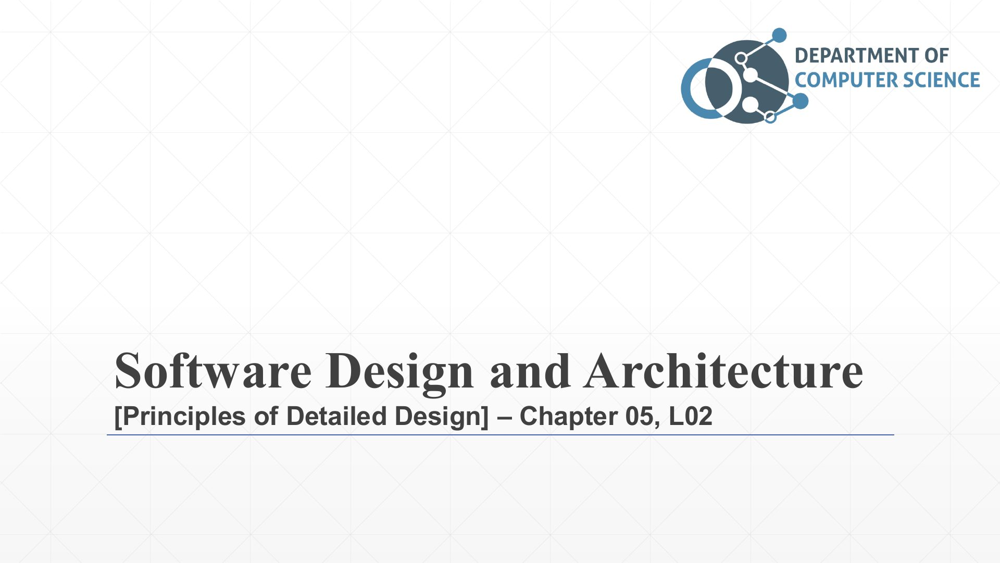
This is the second lecture of Chapter 5. Lecture 1 described the detailed design process; this one is about the principles that make a detailed design good: easy to change, reuse and test.
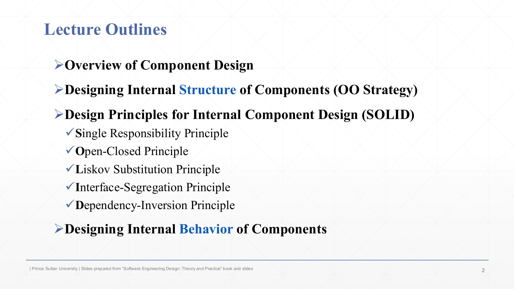
Internal structure means which classes and interfaces a component contains and how they relate. It is drawn with class diagrams.
SOLID is five principles. Only the first three (S, O, L) are taught in this lecture; slide 39 moves I and D to the next one.
Internal behavior (what the classes do at run time, drawn with sequence or state diagrams) is also left for the next lecture.
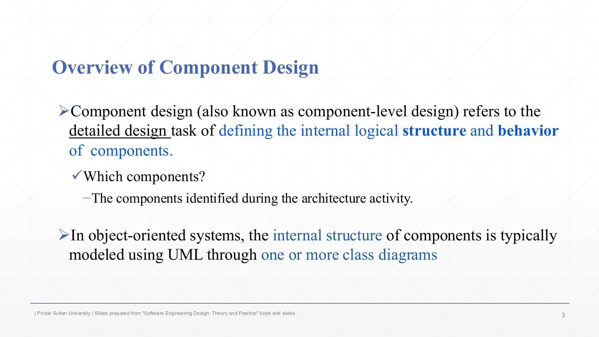
Component design is the part of detailed design that opens each component up. Structure is what it is made of (classes, attributes, interfaces); behavior is how those parts act to deliver the component’s services.
It does not invent new top-level components. It refines the ones the architect already chose, so every class you design belongs to one architectural component.
In an object-oriented system each component’s inside is usually shown with one or more class diagrams. A large component may need several.
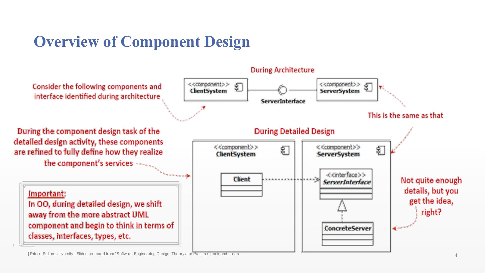
How to read the top diagram (architecture view):
The bottom diagram is the same two components after detailed design: they are opened up to show the classes inside.
The dashed arrow with an open arrowhead from Client to ServerInterface is a dependency: Client calls the interface and never names the concrete class.
The dashed line with a hollow triangle from ConcreteServer to ServerInterface is realization: ConcreteServer implements the interface. Another class could replace it and Client would not change.
The takeaway box says it in one line: in detailed design you stop thinking in components and start thinking in classes, interfaces and types.
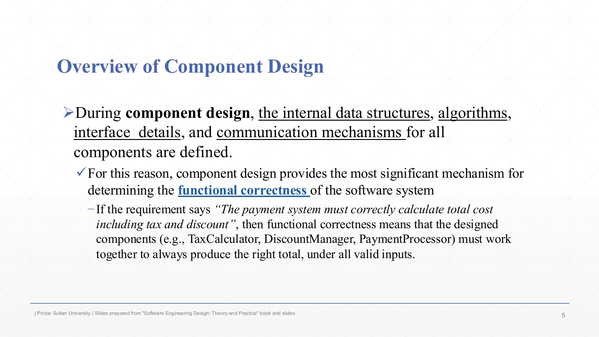
Four things are decided in component design. Data structures say how information is stored. Algorithms say how results are computed. Interface details are the exact method names, parameters and return types. Communication mechanisms say how components talk: direct calls, messages or events.
That makes component design the place where functional correctness is won or lost. Architecture can be perfect, but if the algorithm or the data passed between classes is wrong, the system still gives wrong answers.
In the payment example the three classes must agree on details like the order of operations (discount before tax?) and the number format. Only then is the total right for every valid input. Those agreements are exactly what component design writes down.
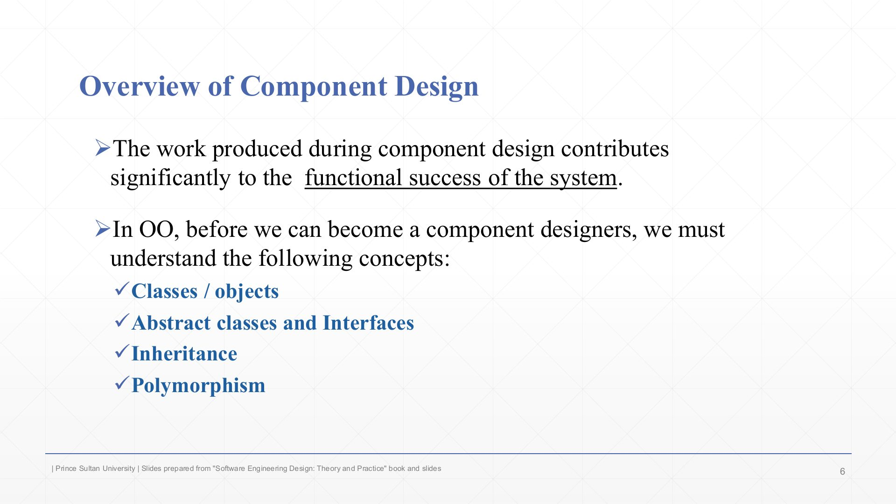
Because component design fixes the actual logic, it is a major factor in whether the system does what users need.
The four object-oriented ideas a component designer must be fluent in. Slides 7–14 refresh each one:
animal.sound(), runs different code depending on the actual object.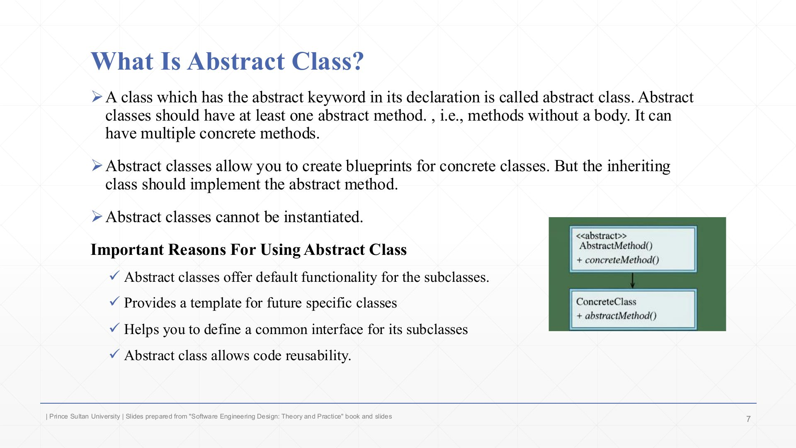
An abstract class is declared with the abstract keyword. It can mix abstract methods (a signature with no body) and concrete methods (normal methods with code). The slide’s definition requires at least one abstract method. Java itself also accepts an abstract class with none, but answer with the slide’s definition in the exam.
Any concrete (non-abstract) subclass must give a body to every abstract method it inherits. If it doesn’t, it must be declared abstract too.
“Cannot be instantiated” means new Animal() is a compile error when Animal is abstract. You can still declare a variable of that type: Animal a = new Cat();.
The four reasons all come down to sharing: common code lives once in the parent (default functionality, reuse), and the abstract methods fix a common set of operations every subclass must offer (template, common interface).
Reading the small diagram:
+ concreteMethod(), which has a body.+ abstractMethod(). The slide draws the arrow downward; standard UML points a hollow triangle from the subclass up to the parent.True or false: an abstract class can contain concrete methods, and it can be instantiated with new.
Half true. It can contain concrete methods, but it can never be instantiated directly. Only a concrete subclass can be created.
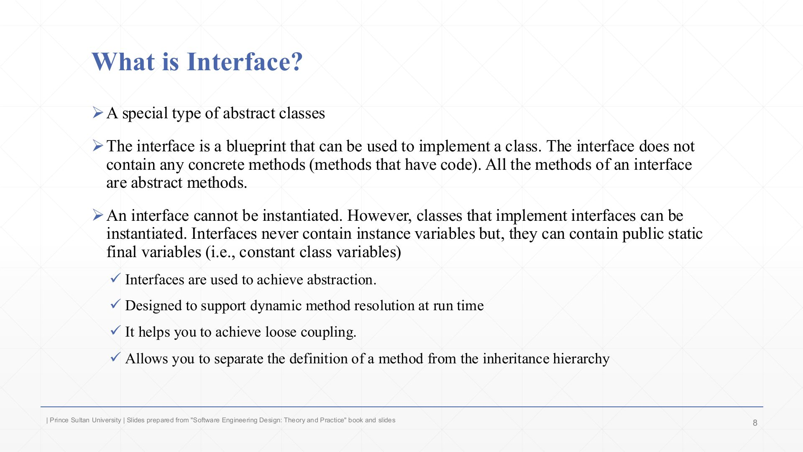
An interface is a pure contract: it lists method signatures and no code. The slide says no concrete methods at all. Modern Java also allows default and static methods, but for this course an interface has only abstract methods.
You cannot write new AnimalInterface(). You create an object of a class that implements it and refer to it through the interface type.
Interfaces hold no instance variables (no per-object state). The only fields allowed are constants: public static final.
Benefits: loose coupling, because callers depend on the contract and not on a specific class. Dynamic method resolution: at run time Java runs the method of the actual object behind the interface. It also lets unrelated classes share a capability outside one inheritance tree, since a Java class can implement many interfaces but extend only one class.
Give two differences between an abstract class and an interface (as defined in this course).
An abstract class can have concrete methods and instance variables; an interface has only abstract methods and constants. A class extends one abstract class (extends) but can implement many interfaces (implements). In UML an abstract class is shown in italics, an interface with «interface».
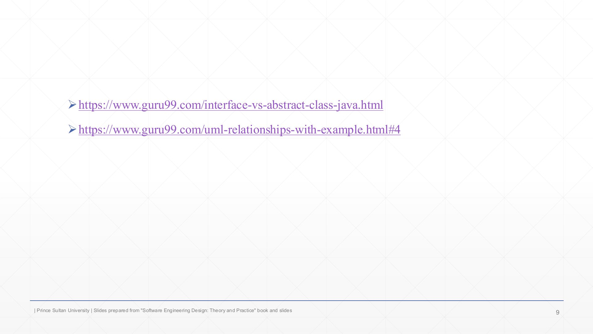
Further reading on when to choose an interface or an abstract class in Java.
Further reading on UML relationships. The #4 anchor jumps to the section on generalization and realization, the two arrows used on slides 10–12.
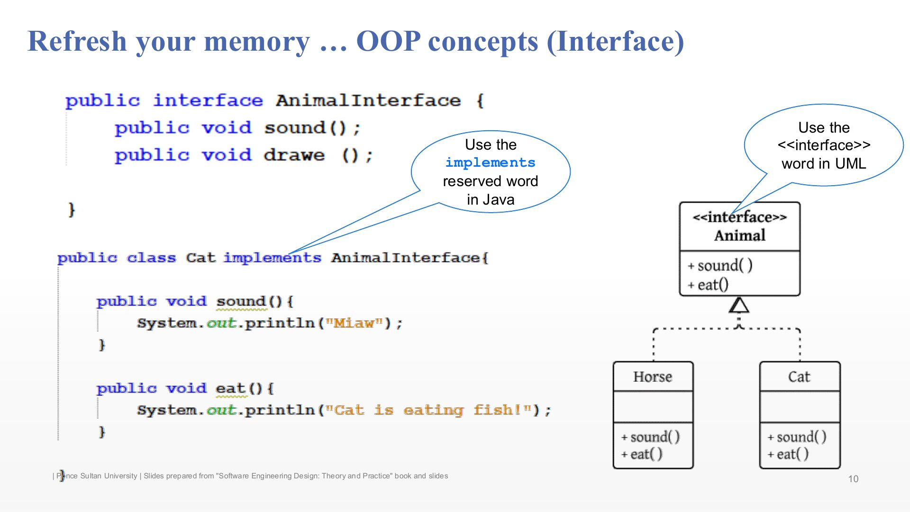
The code, line by line:
| Code | What it does |
|---|---|
public interface AnimalInterface { | Declares a contract named AnimalInterface. |
public void sound(); | A required method: signature only, ending in ;, with no body. |
public void drawe (); | A second required method (spelled “drawe” on the slide). |
} | End of the contract. |
public class Cat implements AnimalInterface{ | implements promises that Cat supplies a body for every method in the interface. |
public void sound(){ System.out.println("Miaw"); } | Cat’s own version of sound(): prints Miaw. |
public void eat(){ System.out.println("Cat is eating fish!"); } | Cat’s eat() body. |
Watch the mismatch: the interface asks for drawe(), but Cat provides eat(). As printed, Java would reject Cat (“does not override abstract method drawe()”). The UML on the right shows what was intended: the interface has sound() and eat().
Reading the UML:
+ sound() and + eat().Which UML notation shows that class Cat implements interface Animal?
A dashed line from Cat to Animal ending in a hollow triangle at Animal (realization), with Animal marked «interface».
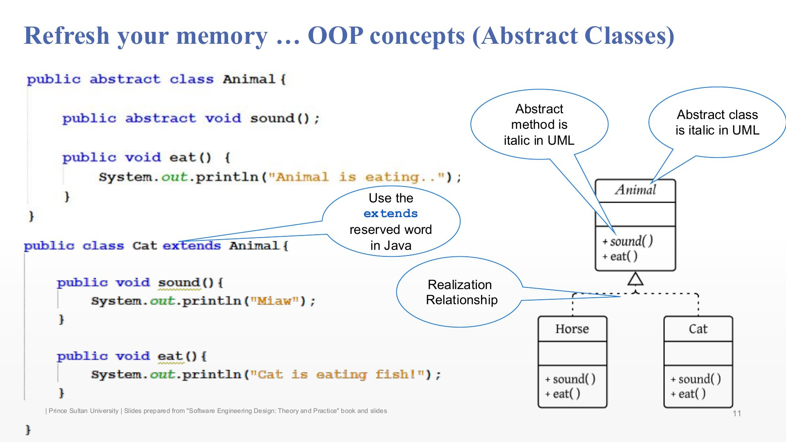
The code, line by line:
| Code | What it does |
|---|---|
public abstract class Animal { | An abstract class: it can’t be instantiated. |
public abstract void sound(); | Abstract method: no body, and every concrete subclass must implement it. |
public void eat() { System.out.println("Animal is eating.."); } | Concrete method: inherited as-is unless a subclass overrides it. |
public class Cat extends Animal { | extends = inherits from Animal (a Java class can extend only one class). |
public void sound(){ System.out.println("Miaw"); } | Required: fills in the abstract sound(). |
public void eat(){ System.out.println("Cat is eating fish!"); } | Optional: overrides the inherited eat() with Cat’s version. |
In UML, italics carry meaning: the class name Animal in italics means abstract class, and sound() in italics means abstract operation. eat() is upright because it has a body.
Notation trap: the slide calls the dashed arrows “Realization”. Standard UML uses realization (dashed line, hollow triangle) for implementing an interface, and generalization (solid line, hollow triangle) for extending a class, abstract or not. In an exam, draw extends with a solid line and say why.
A class Dog extends an abstract class Animal. Which UML line connects them, and how is Animal’s name written?
A solid line with a hollow triangle pointing at Animal (generalization), and Animal’s name in italics because it is abstract.
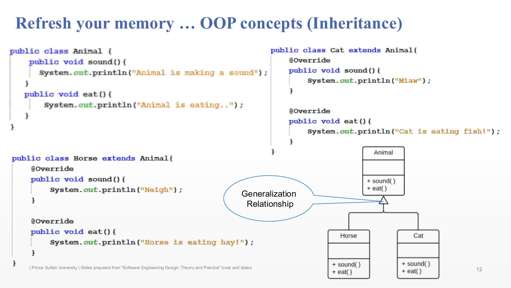
Here Animal is an ordinary (concrete) class, so every method already has a body:
| Code | What it does |
|---|---|
public class Animal { | A normal class: it can be instantiated. |
public void sound(){ ..."Animal is making a sound"... } | Default sound(). |
public void eat(){ ..."Animal is eating.."... } | Default eat(). |
public class Horse extends Animal{ | Horse is-a Animal. |
@Override public void sound(){ ..."Neigh"... } | @Override asks the compiler to check that a matching parent method exists, which catches typos. |
@Override public void eat(){ ..."Horse is eating hay!"... } | Horse’s own eat(). |
public class Cat extends Animal{ ...sound "Miaw", eat "Cat is eating fish!" } | Cat overrides both methods the same way. |
Unlike slide 11, nothing forces the subclasses to override: they could inherit Animal’s versions unchanged. Overriding is a choice here, not a requirement.
The UML shows generalization: solid lines meeting at one hollow triangle that points at the parent, Animal. Read it as “Horse is an Animal” and “Cat is an Animal”.
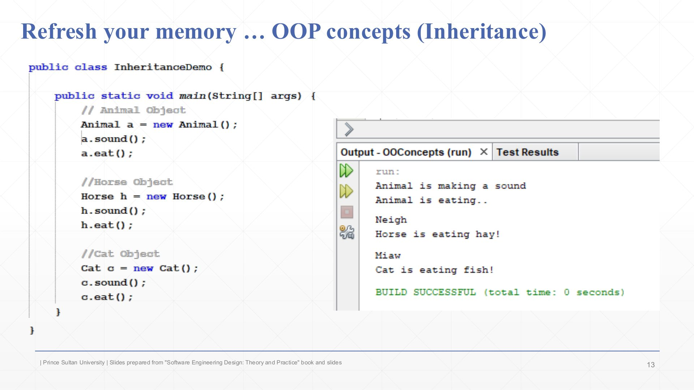
The demo creates one object of each class and calls both methods:
| Code | What it does |
|---|---|
Animal a = new Animal(); a.sound(); a.eat(); | Prints “Animal is making a sound” then “Animal is eating..”. |
Horse h = new Horse(); h.sound(); h.eat(); | Prints “Neigh” then “Horse is eating hay!”. |
Cat c = new Cat(); c.sound(); c.eat(); | Prints “Miaw” then “Cat is eating fish!”. |
The output panel on the right confirms each object runs the version defined in its own class. Every variable here has the same type as its object, so this is plain inheritance. Slide 14 shows what changes when the types differ.
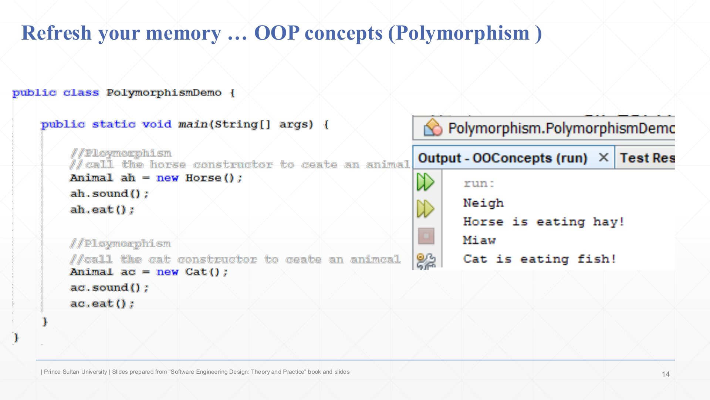
The variables are declared as Animal but hold a Horse and a Cat:
| Code | What it does |
|---|---|
Animal ah = new Horse(); | Declared type Animal, actual object Horse. This is allowed because a Horse is an Animal. |
ah.sound(); ah.eat(); | Prints “Neigh” and “Horse is eating hay!”: the HORSE’s versions, not Animal’s. |
Animal ac = new Cat(); | Same idea with a Cat. |
ac.sound(); ac.eat(); | Prints “Miaw” and “Cat is eating fish!”. |
This is polymorphism (dynamic binding). The declared type (Animal) decides which methods you are allowed to call; the actual object (Horse or Cat) decides which code runs. The choice happens at run time.
Why it matters for this lecture: OCP (slides 22–31) works because a GameEngine holding a Character reference can call move() and get each character’s own movement without knowing its class.
Animal x = new Cat(); x.sound(); What is printed, and what is this mechanism called?
“Miaw”. It is polymorphism (dynamic binding): the overriding method of the actual object runs, even though the variable’s type is Animal.
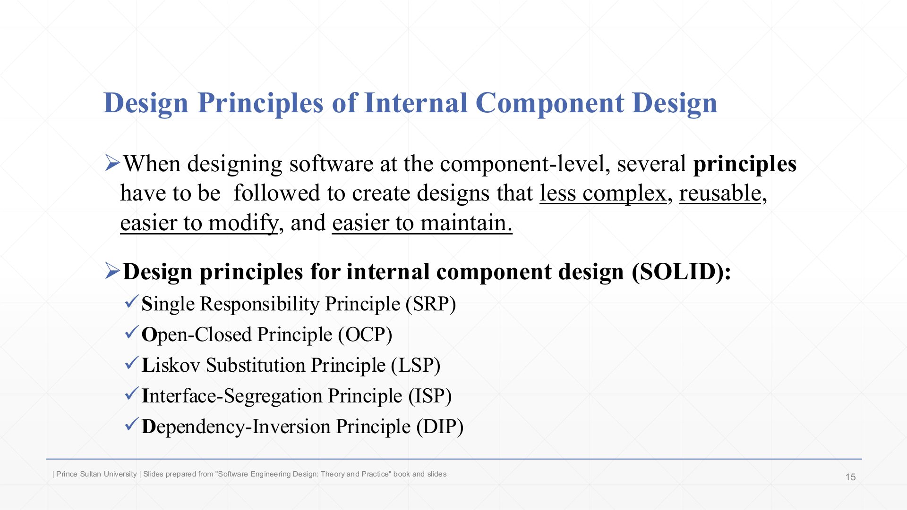
The goal of every principle that follows: designs that are less complex, reusable, easier to modify and easier to maintain.
SOLID is the acronym for the five principles: Single Responsibility, Open-Closed, Liskov Substitution, Interface Segregation, Dependency Inversion. S, O and L are covered in this lecture.
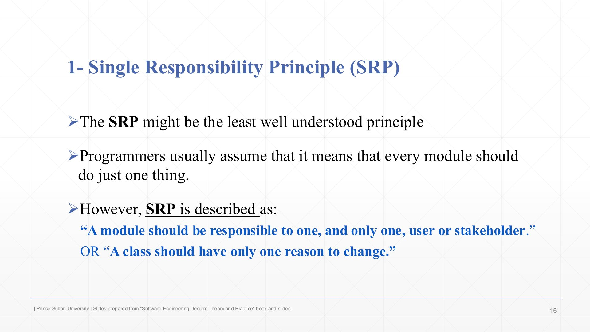
The common misreading: “every module should do just one thing.” That is good advice for small functions, but it is not what SRP says.
SRP is about who causes change. A module should answer to one actor (a user group, stakeholder or policy). Equivalently, a class has one reason to change. If the accountants and the IT team could each force edits to the same class, it has two responsibilities.
State the Single Responsibility Principle and explain what “reason to change” means.
A class should have only one reason to change, i.e. it should be responsible to one actor or stakeholder. A reason to change is a source of change requests: a policy, user group or concern (data format, tax rules, report layout). Two independent sources mean two responsibilities that should be separated.
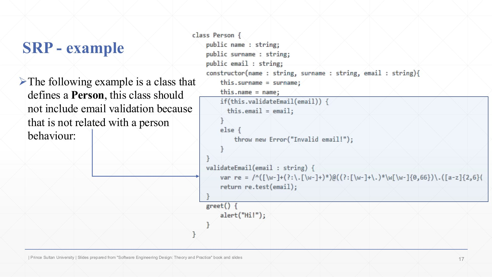
The code (TypeScript-style), line by line:
| Code | What it does |
|---|---|
class Person { | Represents a person. |
public name : string; public surname : string; public email : string; | Person data: three text fields. |
constructor(name, surname, email){ | Runs when a Person is created. |
this.surname = surname; this.name = name; | Stores the names. |
if(this.validateEmail(email)) { this.email = email; } | Checks the address format before storing it. |
else { throw new Error("Invalid email!"); } | Rejects a bad address by throwing an error. |
validateEmail(email : string) { | Email-format rule, living inside Person (the boxed part on the slide). |
var re = /^([\w-]+(?:\.[\w-]+)*)@(...)/; | A regular expression describing a valid address. |
return re.test(email); } | True if the address matches the pattern. |
greet() { alert("Hi!"); } | Genuine person behavior. |
The boxed lines show the violation: Person now has two reasons to change. Its fields change when what a person is changes; validateEmail changes when the email rules change (new domains, longer TLDs). You also can’t test the email rule without building a Person.
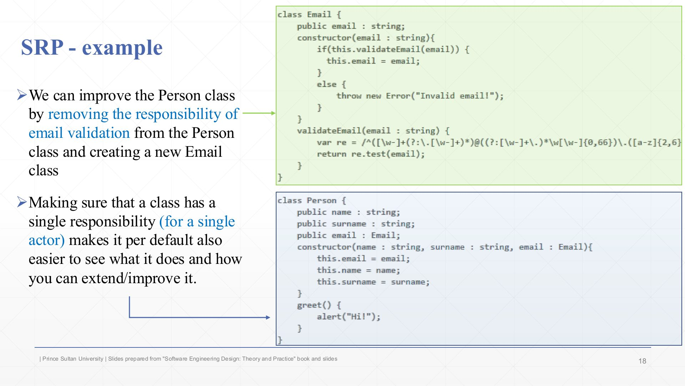
The refactoring moves validation into its own class:
| Code | What it does |
|---|---|
class Email { | New class that owns everything about an email address. |
constructor(email){ if(this.validateEmail(email)) {...} else { throw ... } } | An Email object can only exist if the address is valid. |
validateEmail(email){ ... return re.test(email); } | The same rule, now in its only home. |
class Person { | Back to pure person data and behavior. |
public email : Email; | The field’s type is now Email, not string. |
constructor(name, surname, email : Email){ this.email = email; ... } | Person receives an already-validated Email, so no check is needed. |
greet() { alert("Hi!"); } | Unchanged. |
Each class now has one reason to change: email-rule changes touch only Email, and person changes touch only Person. A class with one responsibility (one actor) is also easier to read, test and extend.
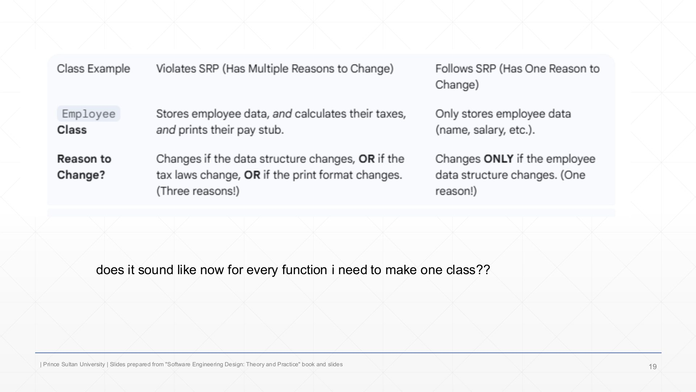
The violating Employee class stores data, calculates taxes and prints pay stubs. Three different things can force edits: the data structure, the tax laws and the print format.
The SRP version keeps only the employee data in Employee. Tax calculation and pay-stub printing move to their own classes, so Employee changes only when the data changes.
The slide’s question has a clear answer, given on slide 20: no. SRP does not mean one class per function.
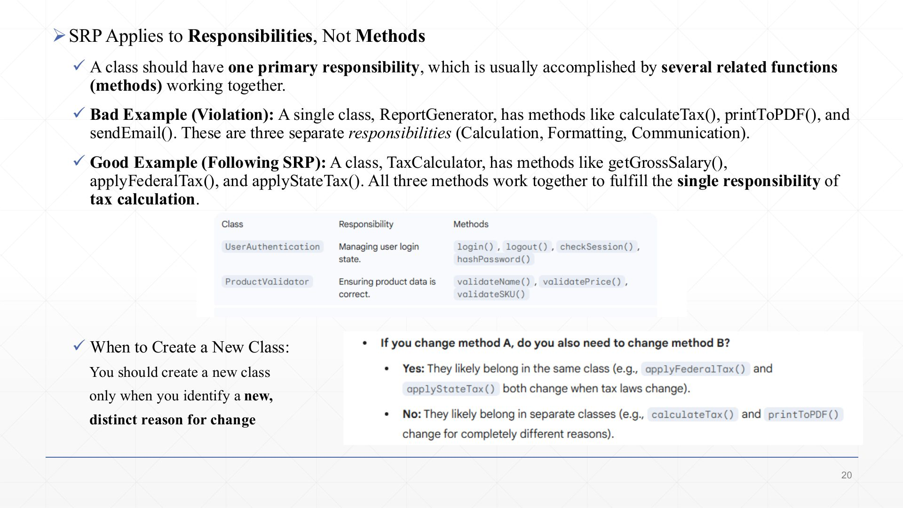
A responsibility is usually carried out by several related methods working together. SRP limits the number of responsibilities, not the number of methods.
ReportGenerator mixes three responsibilities: calculation (calculateTax), formatting (printToPDF) and communication (sendEmail). Each changes for a different reason.
TaxCalculator has three methods but one responsibility, tax calculation. The table adds two more good examples: UserAuthentication (login state, four methods) and ProductValidator (product data correctness, three methods).
The test for splitting: if you change method A, would you also have to change method B? If yes, they belong together (both tax methods change with tax law). If no, they belong in separate classes (calculateTax and printToPDF).
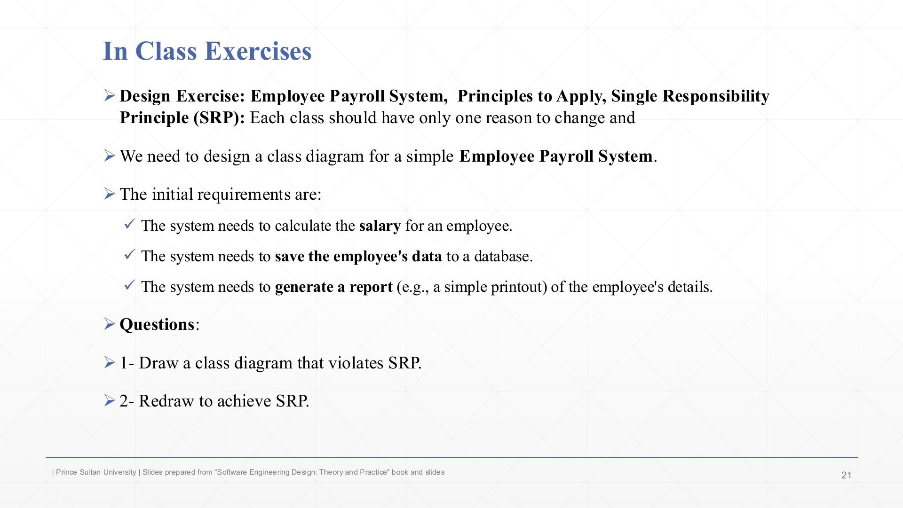
Three requirements means three potential reasons to change: pay rules, storage technology and report format.
Question 1, a design that violates SRP (one class does everything):
Employee - id, name, baseSalary + calculateSalary(): double + saveToDatabase(): void + generateReport(): String
Question 2, the SRP redesign. Employee keeps the data; each job gets its own class, and each one depends on (uses) Employee:
Employee - id, name, baseSalary (data only) SalaryCalculator + calculateSalary(e: Employee): double EmployeeRepository + save(e: Employee): void EmployeeReportGenerator + generate(e: Employee): String all three - - -> Employee (dependency)
NextGen Library: a junior developer put fee calculation, book data and report formatting into one BookManager class. Which detailed-design principle is violated? Draw a class diagram that fixes it.
The Single Responsibility Principle: BookManager has three reasons to change (book data, loan and fee rules, report format). Fix: Book (title, ISBN, author), LoanCalculator (due date and late fee) and MonthlyReportGenerator (text report), each with one responsibility; LoanCalculator and the report class use Book.
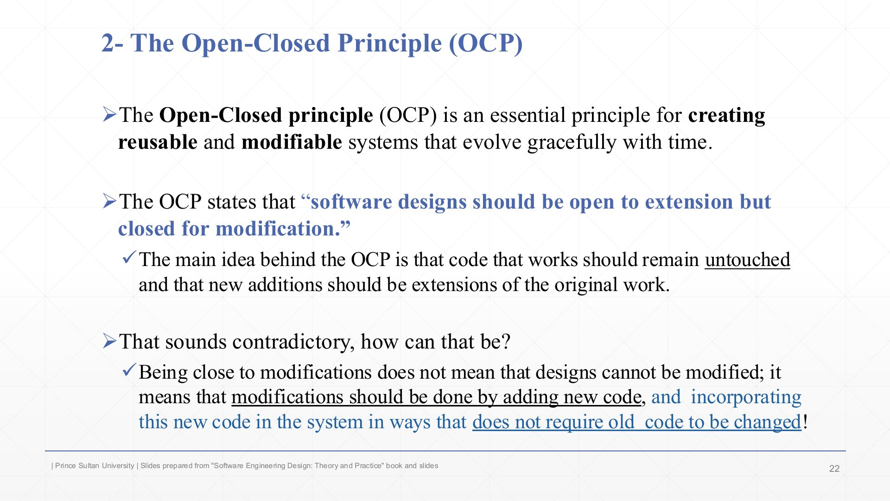
OCP is what lets a system keep growing for years without every new feature breaking old ones.
“Open to extension” means you can add new behavior. “Closed for modification” means code that already works and is tested stays as it is.
There is no contradiction: the system still changes, but by adding classes (a new subclass, a new implementation) that plug into existing abstractions. No working code has to be edited for that.
Explain how a design can be both “open for extension” and “closed for modification”.
New behavior is added as new code (new classes implementing an existing interface or extending an abstract class) that the system uses through that abstraction, so existing, tested classes are never edited.
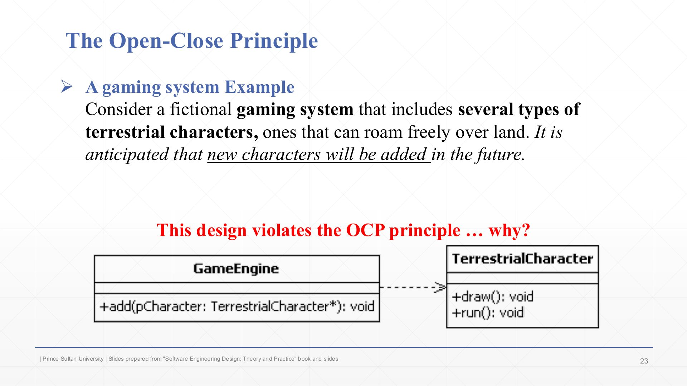
The scenario matters: several kinds of characters exist, and more will be added. A change is expected, so the design must be ready for it.
Reading the diagram:
add(pCharacter: TerrestrialCharacter*). The * is a C++ pointer.draw() and run().Why it violates OCP: GameEngine names a concrete class. Every new kind of character (one that flies, one that swims) forces a change to GameEngine, the code that already works.
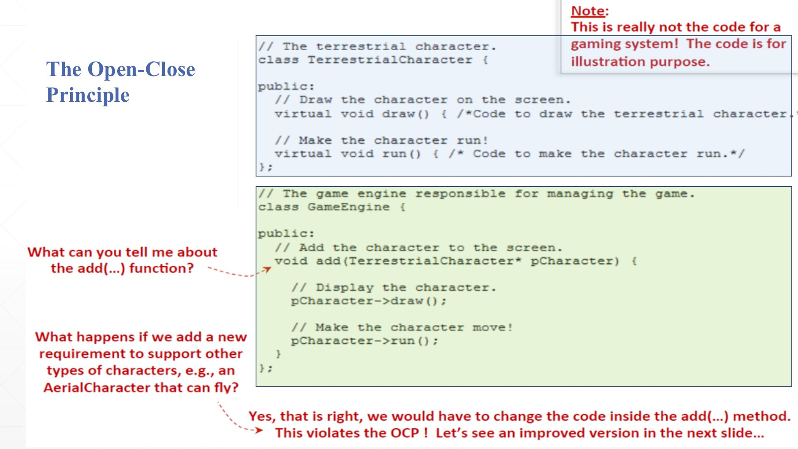
The C++ code, line by line:
| Code | What it does |
|---|---|
class TerrestrialCharacter { | A character that moves over land. |
virtual void draw() { ... } | virtual = subclasses may override it, and the call is resolved at run time. |
virtual void run() { ... } | Land movement. |
class GameEngine { | Manages the game. |
void add(TerrestrialCharacter* pCharacter) { | Accepts only terrestrial characters. |
pCharacter->draw(); | -> calls a method through a pointer: show the character. |
pCharacter->run(); | Make it move by running. |
add(...) is hard-wired to one concrete type and one way of moving (run).
An AerialCharacter that flies doesn’t fit: it isn’t a TerrestrialCharacter and has no run(). Supporting it means editing add(...), which is working code. That edit is the OCP violation.
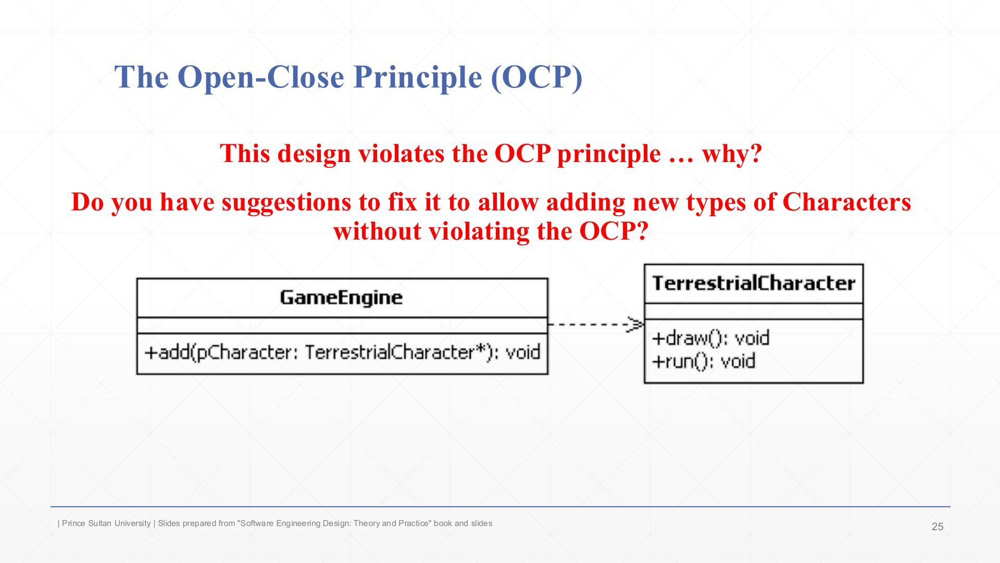
The fix students should propose: introduce an abstraction (an interface or abstract class) named Character with the operations every character has, and make GameEngine depend on Character instead of on a concrete class. Slides 26–29 show how a first attempt still goes wrong, and then the correct version.
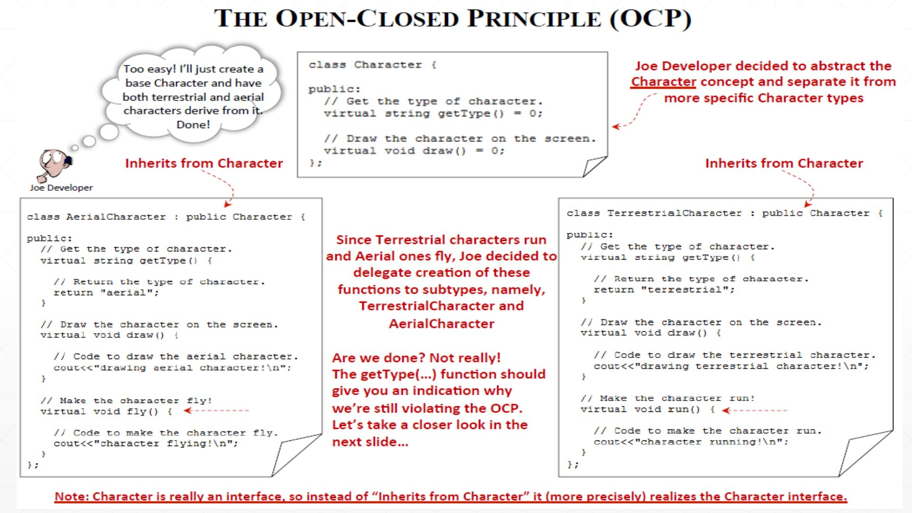
Joe’s first attempt (C++):
| Code | What it does |
|---|---|
class Character { virtual string getType() = 0; virtual void draw() = 0; }; | = 0 makes a method pure virtual (abstract). A class with only pure virtual methods acts as an interface. |
class AerialCharacter : public Character { | : public Character = inherits from (realizes) Character. |
getType() { return "aerial"; } draw() {...} fly() {...} | Reports its type, draws itself, and has its own fly(). |
class TerrestrialCharacter : public Character { | Same shape: |
getType() { return "terrestrial"; } draw() {...} run() {...} | its own run(). |
Joe abstracted the drawing, but movement was left to each subtype under different names (fly, run). Character itself has no movement operation.
The getType() method is the warning sign: a caller that has to ask “what type are you?” is about to branch on the answer. Slide 27 shows that branch.
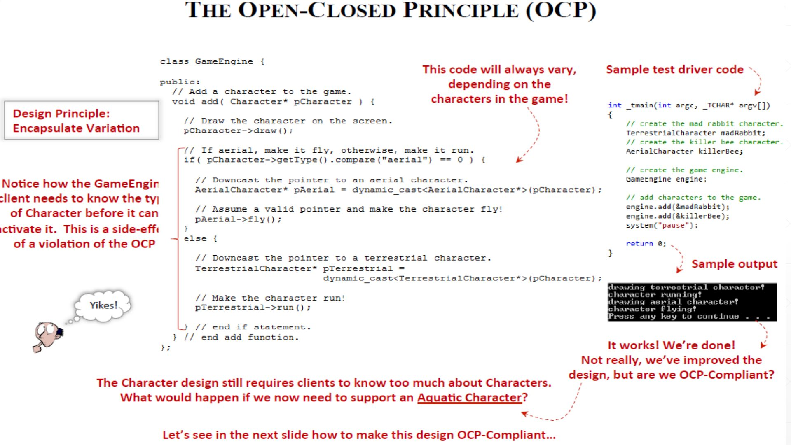
GameEngine.add with Joe’s design:
| Code | What it does |
|---|---|
void add( Character* pCharacter ) { | Now takes any Character, which is better. |
pCharacter->draw(); | Drawing works for every character. |
if( pCharacter->getType().compare("aerial") == 0 ) { | Asks for the type string. |
AerialCharacter* pAerial = dynamic_cast<AerialCharacter*>(pCharacter); | dynamic_cast = a checked downcast to the concrete type. |
pAerial->fly(); } | Only then can it call fly(). |
else { TerrestrialCharacter* pTerrestrial = dynamic_cast<...>(pCharacter); | Otherwise assume terrestrial… |
pTerrestrial->run(); } | …and run. |
test driver: TerrestrialCharacter madRabbit; AerialCharacter killerBee; engine.add(&madRabbit); engine.add(&killerBee); | Prints: drawing terrestrial / running / drawing aerial / flying. |
Encapsulate variation: the part that changes (how each character moves) should be hidden behind one stable operation. Here it leaks into GameEngine as an if/else that “will always vary” with the set of characters.
It runs correctly, but it still violates OCP: adding an AquaticCharacter means editing add() again with another branch and another cast.
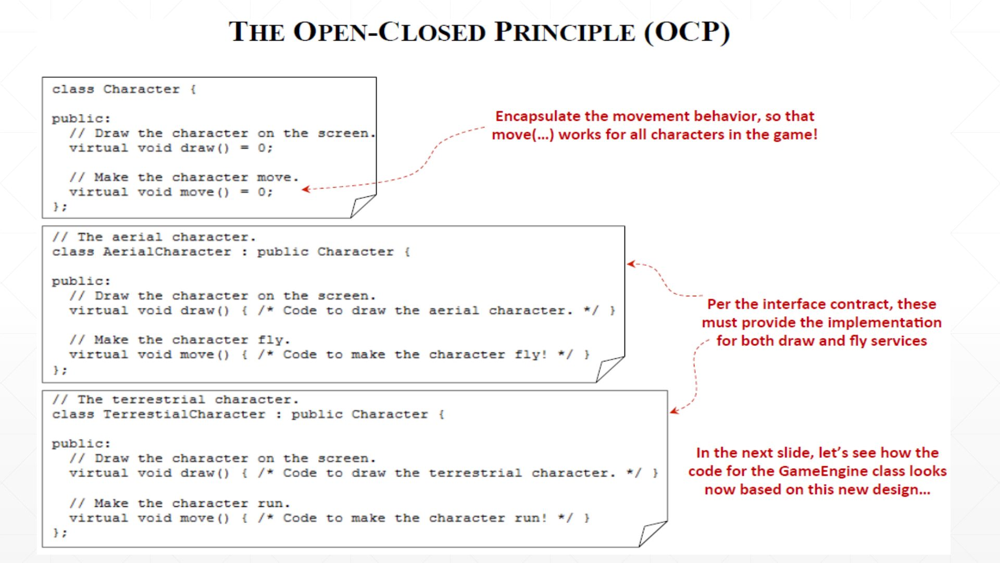
The fix: put one movement operation, move(), into Character itself (virtual void move() = 0). “How it moves” becomes each subtype’s private business.
Each subtype implements the full contract:
draw() draws it, move() makes it fly.draw() draws it, move() makes it run.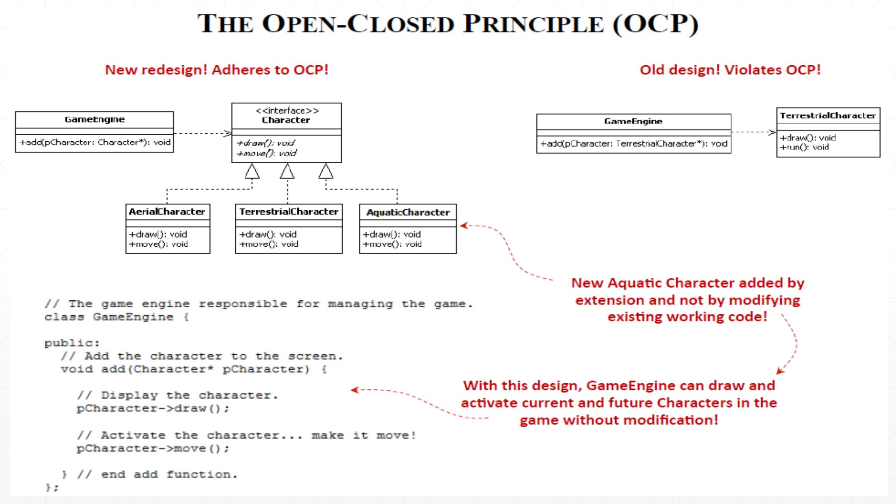
Reading the new diagram (left) against the old one (right):
+draw() and +move() are abstract operations.AquaticCharacter is added by writing one new class. GameEngine, Character and the existing characters are not touched. That is OCP.
add() now just calls draw() and move(); polymorphism (slide 14) runs the right movement. The same design in Java:
interface Character {
void draw();
void move();
}
class AquaticCharacter implements Character {
public void draw() { /* draw a fish */ }
public void move() { /* swim */ }
}
class GameEngine { // never changes
void add(Character c) {
c.draw();
c.move();
}
}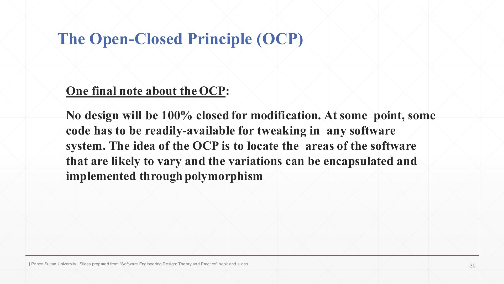
OCP is a direction, not an absolute. Something always has to be edited: a factory, a configuration or a list of characters.
The skill is to predict where change is likely (new character types, new salary types, new payment methods), hide that variation behind an abstraction, and let polymorphism pick the implementation.
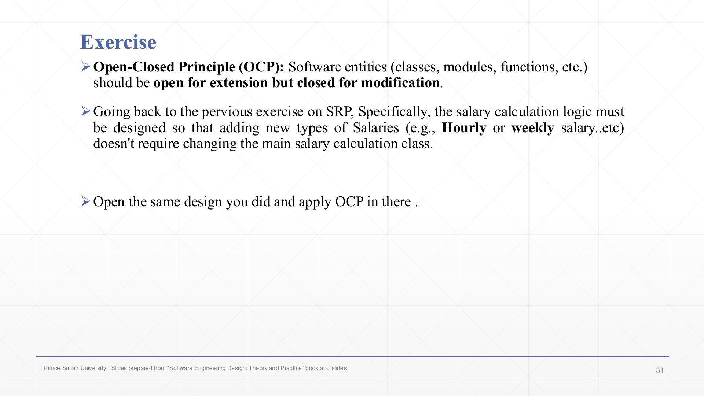
The same rule restated for any software entity: a class, module or function.
Model answer: make the varying part (how a salary is computed) an interface, so a new salary type is a new class.
«interface» SalaryPolicy
+ calculate(e: Employee): double
MonthlySalary, HourlySalary, WeeklySalary
- - -|> SalaryPolicy (realization)
SalaryCalculator (never edited)
+ calculateSalary(e: Employee,
p: SalaryPolicy): double
New CommissionSalary = one new class
that implements SalaryPolicy.NextGen Library (physical books now, E-books soon): by applying the Open/Closed Principle for E-books, draw the class diagram.
Introduce an abstract class or interface (e.g. LibraryItem with title, ISBN, author and an abstract operation such as calculateLateFee()). PhysicalBook and EBook extend or implement it. The loan and report classes depend only on LibraryItem, so adding EBook (or audiobooks later) needs no change to existing classes.
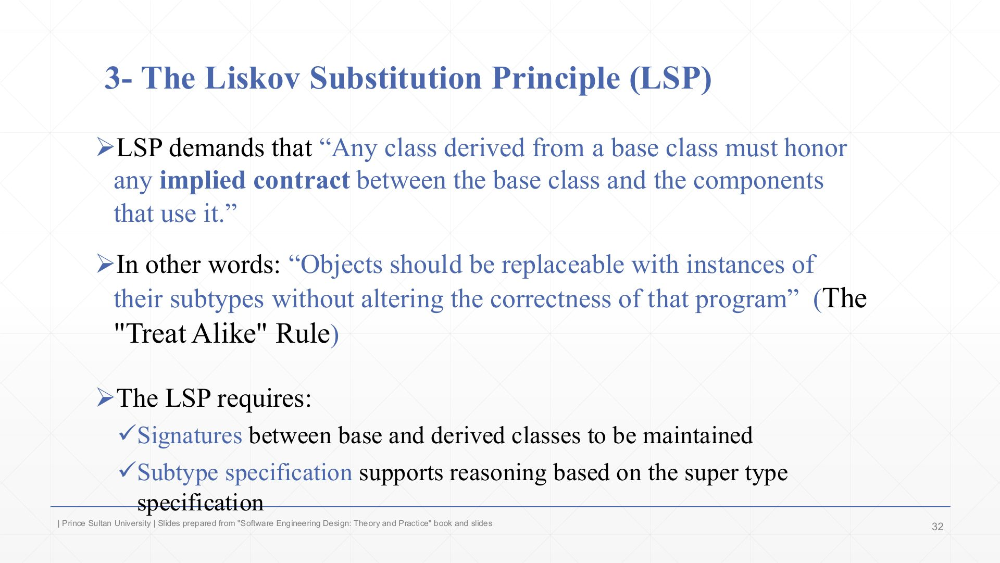
The “implied contract” is everything callers rely on: the method names and types, but also the behavior (what the method promises to do and what it requires before it is called).
If code works with a parent object, it must keep working when you hand it a child object instead. The slide calls this the “treat alike” rule.
Two requirements: the method signatures stay compatible, and anything you could conclude from the parent’s specification must still hold for the subtype.
State the Liskov Substitution Principle in one sentence.
Objects of a superclass must be replaceable by objects of any subclass without altering the correctness of the program: subtypes must honor the base type’s contract.
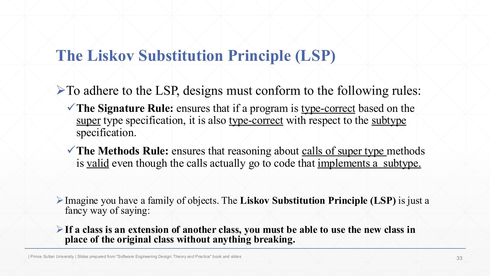
Signature rule: if a program type-checks against the parent’s methods, it type-checks with the child too (same methods with compatible parameters and return types). The compiler mostly enforces this.
Methods rule: reasoning about a call stays valid even though the child’s code runs. If move() promises “moves over land”, every override must still move over land. The compiler can’t check this, so the designer must.
The plain-language version: a child class must work anywhere the parent works, without anything breaking.
Which LSP rule does the compiler NOT check for you, and why?
The methods rule (behavior). It concerns what methods do: pre- and postconditions and side effects. Types alone can’t express that, so a subclass can compile and still break callers.
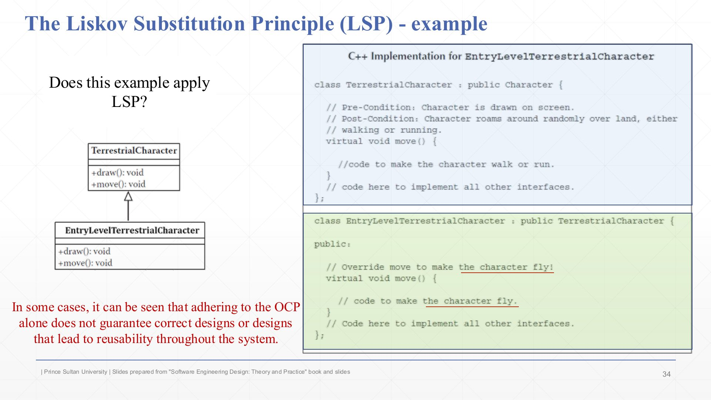
The code and its contract:
| Code | What it does |
|---|---|
class TerrestrialCharacter : public Character { | The parent. |
// Pre-Condition: Character is drawn on screen. | What must be true before calling move(). |
// Post-Condition: Character roams around randomly over land... | What move() promises: it stays on land, walking or running. |
virtual void move() { //code to make the character walk or run } | Honors the promise. |
class EntryLevelTerrestrialCharacter : public TerrestrialCharacter { | A “kind of” terrestrial character. |
virtual void move() { // code to make the character fly. } | Overrides move() to FLY. |
Answer: no, it violates LSP. It compiles (signature rule OK) but breaks the postcondition “roams over land”. Code that relies on terrestrial characters staying on the ground, such as collision with water or bridges, misbehaves when given this subclass.
The lesson in red: OCP alone isn’t enough. The class was added by extension (OCP satisfied), yet the design is wrong because the subtype isn’t substitutable. A similar trap is a subclass whose move() throws an exception (“Ghosts don’t move!”): that also breaks the contract.
A subclass compiles and overrides every method, but one override throws UnsupportedOperationException. Does it satisfy LSP?
No. It satisfies the signature rule but violates the methods rule: callers of the base type expect the operation to work. The subclass can’t replace its parent without breaking the program.
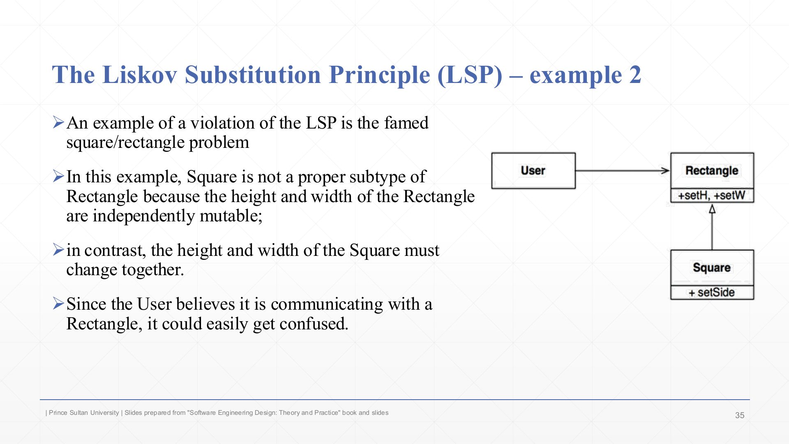
The classic LSP violation. Mathematically every square is a rectangle, but in software Square should not inherit from Rectangle.
Rectangle’s implied contract: setH and setW change only their own dimension. A user that sets width 5 and height 2 expects an area of 10.
A Square has to keep its sides equal, so its setters change both. After setW(5); setH(2) the area is 4, not 10.
Diagram and fix:
+setH, +setW).+setSide.area().Why does Square extends Rectangle violate LSP? Use a short example.
Rectangle lets width and height change independently. Code like r.setW(5); r.setH(2); assert r.area()==10 works for a Rectangle, but a Square forces both sides equal, so the area is 4 and the assertion fails. A Square can’t substitute for a Rectangle.
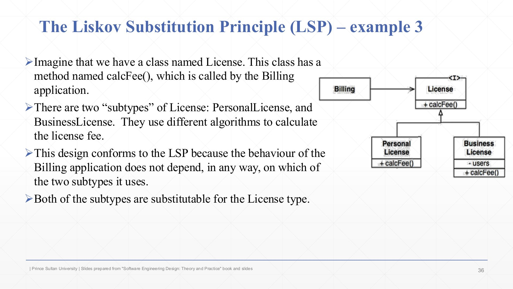
Reading the diagram:
calcFee().+ calcFee().- users (a private field) because its fee depends on the number of users.Each subtype computes the fee differently (a flat personal fee; a fee per business user), but both honor the contract “return this license’s fee”.
Billing’s behavior never depends on which subtype it receives, so both are substitutable: LSP holds. It is also OCP-compliant, because a new license type is a new class. In Java:
interface License { double calcFee(); }
class PersonalLicense implements License {
public double calcFee() { return 100.0; }
}
class BusinessLicense implements License {
private int users;
public double calcFee() {
return users * 50.0;
}
}
class Billing {
void printBill(License l) {
System.out.println(l.calcFee());
}
}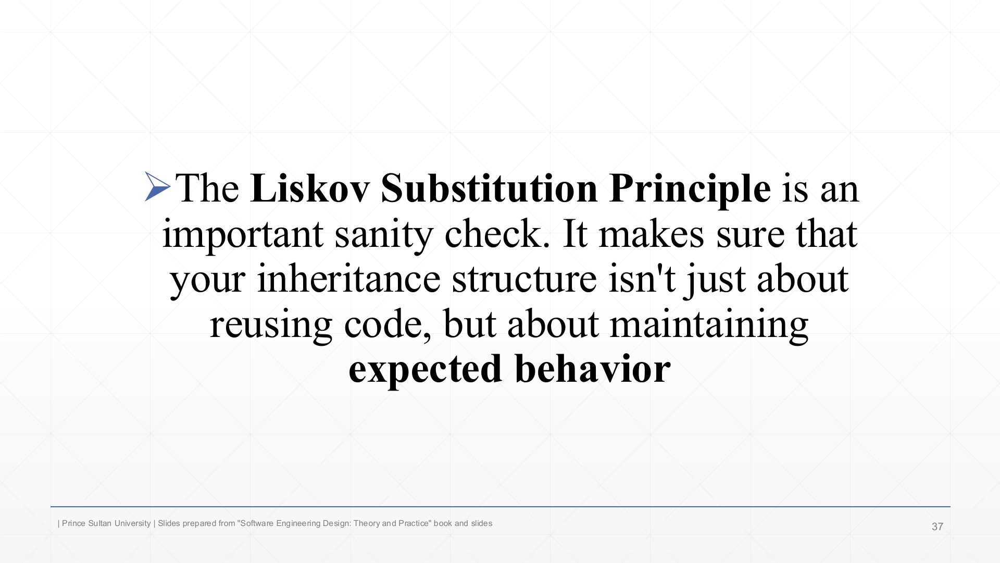
Use LSP to sanity-check every inheritance arrow you draw: ask whether the child can stand in for the parent everywhere.
Inheritance is about keeping expected behavior, not just reusing code. If the honest answer is “only sometimes”, use composition or a different abstraction instead.
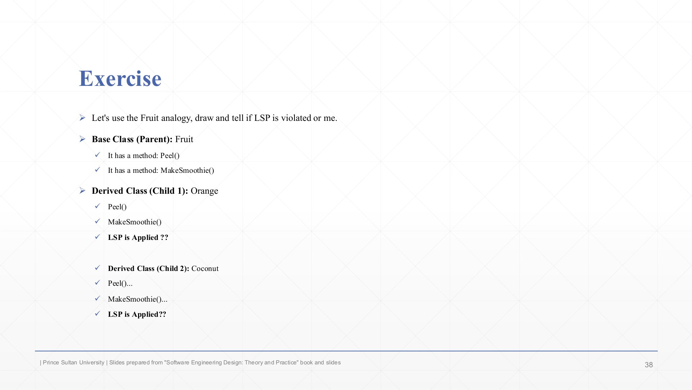
Fruit promises two operations every fruit can do: Peel() and MakeSmoothie().
Orange: peeling and blending both work exactly as Fruit promises. LSP holds.
Coconut: you don’t peel a coconut like other fruit; you crack it open. If Coconut.Peel() throws an error or does something callers don’t expect, a program that peels any Fruit breaks. LSP is violated. Model drawing and fix:
Violation
Fruit (+Peel(), +MakeSmoothie())
^ Orange both work
^ Coconut Peel() fails
Fix
«interface» Peelable (+Peel())
«interface» Blendable (+MakeSmoothie())
Orange implements Peelable, Blendable
Coconut implements Blendable
and adds its own +Crack()Does Coconut violate LSP if Fruit declares Peel()? How would you fix the design?
Yes, if Coconut can’t honor Peel() (it throws or behaves differently), code written for Fruit breaks. Fix: don’t promise Peel() for every fruit. Split the capabilities into separate interfaces (Peelable, Blendable) and have each fruit implement only what it can do. This also previews the Interface Segregation Principle.
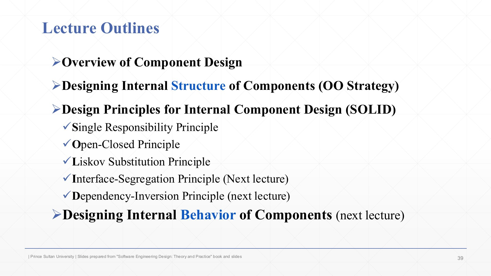
Covered so far: component design, the OO refresher, and S, O and L. The Interface Segregation and Dependency Inversion principles come in the next lecture.
Also next lecture: designing the internal behavior of components.